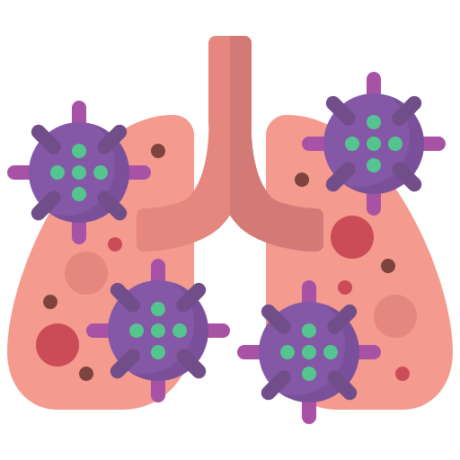

Resp
redict
Toda la información recopilada sera guardado para fines de investigación
Estoy de acuerdo

Edad
Género
Mujer
Hombre
Estado Civil
Soltero
Casado
Divorciado
Ocupación
Estudiante
Empleado
Ama de casa
Enfermera
Campesino
Medico
Ingeniero
Albañil
Docente
Administrativo
Chofer u operador
Guardia
Desempleado
Mecanico
Estilista
Veterinario
Comerciante
Carpintero
Abogado
Quimico
Diseñador grafico
Arquitecto
Psicologo
Petrolero
Tiempo de residencia en su domicilio actual
Mas de 5 años
Toda su vida
Otro
Mas de 2 años
1 año
Menos de un año
¿Se enferma seguido de las vias respiratorias?
No
Si
¿A que lo atribuye?
A los cambios de temperatura
A la contaminación
A las alergias
No se enferma frecuentemente
Mala alimentacion
¿Cuantas vacunas covid se puso?
1,2 y refuerzo
1 y 2 dosis
No se vacuno
1 dosis
Cansino
Moderna
¿Usted o alguien cercano padeció covid?
No
Si
¿Requirio hospitalización?
No
Si
En casa ¿Cocinan o cocinarón con leña?
No
Si
En casa ¿Alguien o usted fuma?
Alguien de la familia
No
Yo
En su familia ¿Hay alguien con una enfermedad cronica?
Ninguna
Cancer
Diabetes Mellitus
Enfermedad Cardiaca
Hipertensión arterial
EPOC
Osteoporosis
Anemia
Asma
Insuficiencia Renal Crónica
Neumonia
Enfermedad de la piel
Bronquitis
¿Cual es el origen del agua para beber?
Embotelladora local
Embotelladora de marca
De la llave
¿Origen del agua para cocinar?
Embotelladora local
Embotelladora de marca
De la llave
Dentro de tu familia ¿Hay alguien con algun padecimiento en relación al agua?
Ninguna
Piedras en riñon
Insuficiencia renal
Cancer de riñon
Irritación de mucosas
Quistes renales
¿Considera su vida estresante tanto que lo ha afectado laboral, social y personal?
No
Si
¿Siente ansiedad o nerviosismo o deseos de comer todo el tiempo?
No
Si
¿Como considera su autoestima?
Baja
Media
Alta
En los ultimos 6 meses ¿Ha perdido interes en actividades que consideraba agradables?
No
Si
No se habia puesto a pensar en eso
¿Se ha sentido cansado mas de lo normal incluso sin haber hecho actividad fisica o que no pueda dormir?
No
Si
¿Su estado de animo cambia repentinamente?
No
Si
¿Padece alguna enfermedad crónica que no sea enfermedad respiratoria?
No
Si
Obtener Resultados
Error en el campo edad
 Toda la información recopilada sera guardado para fines de investigación
Toda la información recopilada sera guardado para fines de investigación
Toda la información recopilada sera guardado para fines de investigación
Toda la información recopilada sera guardado para fines de investigación